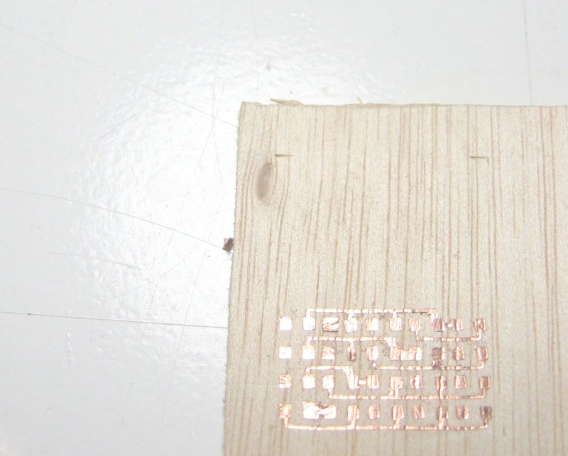

For that assignment I decided to do a version of Neil's Charlieplex LED Array version 2 using flexible cooper.
The Board
Charlieplexing
Charlieplexing takes advantatge of two facts: First, LED's are diodes, electricity can just flow in one direction. Second, the three-state logic capabilities of microcontrollers, most microcontrollers pins in addition to have 0 and 1 logic levels (ex. 0V - 5V) they are able to be on a third state where the port have a higher impedance than the circuit. That simply removes the output from the circuit.
By using charlie plexing we can simply increase the number of LED's we can drive with a limited number of microcontroller pins.
Considering l the number of LED's and p the number of pins:
Using Charliplexing for 5 pins we get 20 LED's
l = p*(p–1)
Using normal multiplexing we'll just get 6 LED's
l = (p/2)^2
On Neil's example we're going to run 20 LED's out of just 5 pins.
20 = 5*(5-1)
PCB making with a Vinyl Cutter
You can run your Roland CAMM plotter directly from FABmodules. Remember that the name you give on your printer driver settings should be the same set on the camm_send file in your fabmodules folder, by default it's vinyl. There are two extra tools you'll need: a pair of good tweezers and some transfer paper.
1. Cut the bottom copper part hello.array.44.2.bottom.png on flexible cooper. Apply transfer paper on top and peel the whole circuit. Stick it on a flat surface (ex: plywood) and press it hard with your fingers. Remove the transfer paper and use some tweezers to remove the cooper around your circuit tracks.
2. Cut the vias layer hello.array.44.2.vias.png on flexible epoxy film. Follow the same steps as before but remove the inner holes with some tweezers while you have it stick it on the transfer film.
3. Cut the top copper part hello.array.44.2.top.png on flexible cooper. Follow the same steps as before.
Programming and testing
When you have an array of LED's and you want to use them as a display you need to find a way to store the data. An easy way to do that is using two-dimensional arrays. We have 5 columns and 4 rows so we can store the whole display in 4 bytes. We can store each column as a single byte so we'll have 1 bytes per column.
B11111
B00000
B is just a prefix to remember we are storing binary data. After that we have 5 values each one corresponding to the boolean state of a LED on the column. So here it is how it will look like if we want to store a character set:
byte caracter[3][4] = {
{ B11111, B10100, B10100, B11111}, // A
{ B11111, B10100, B10100, B11111}, // B
{ B11111, B10001, B10001, B10001}, // C …
};
{kind=link}
{kind=link}
{kind=link}